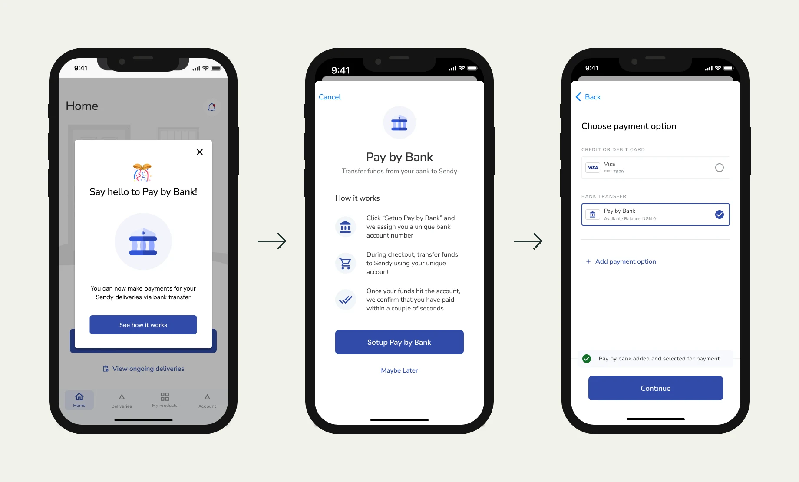
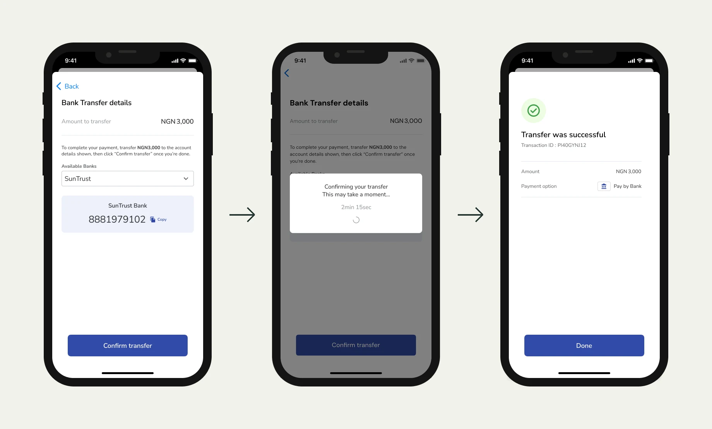
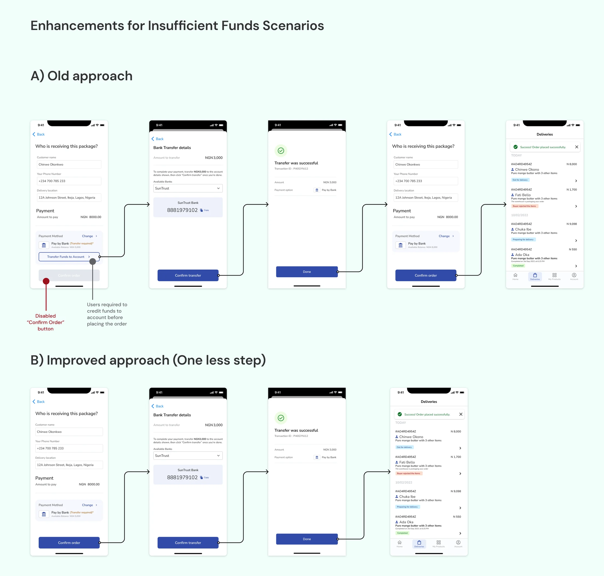

Sendy had expanded into Nigeria and merchants were adopting the platform quickly for deliveries. But payments were a friction point. Card payments were the main option, and merchants knew from experience how often they failed. Mobile money, unlike in Kenya, wasn't widely adopted in Nigeria for business transactions.
We partnered with OnePipe, a Nigerian fintech, to introduce bank transfers as an alternative payment method. The goal was to give merchants a payment option they already trusted. Pay by Bank was part of Sendy's wider payments work, which handled more than $2M a quarter at a 95% processing success rate.
What we learned from merchants
I led remote research with 8 Nigerian merchants. It was new for me to design from Nairobi for users in Lagos. Scheduling was unpredictable; merchants were often on the move or rescheduled last minute. My teammates in Nigeria were essential for recruiting participants and handling the logistics.
The findings were clear. Most of our merchants were early-stage entrepreneurs who valued Sendy because it removed logistics complexity from their businesses. Every merchant preferred bank transfers to card payments, because failed card transactions had let them down before. Two specifically mentioned preferring PayPal deposits to debit cards because of higher success rates.
Solution approach
The solution needed to cover three things: onboarding merchants to a virtual bank account (required by Nigerian banking regulations), verifying phone numbers for compliance, and designing the top-up and checkout flows.
We mapped user flows across all three areas and shared them with product squads, finance stakeholders, and OnePipe to align before building. This caught problems early: unclear KYC requirements, the need for better onboarding guidance on how bank transfers work, and potential confirmation delays that could erode the trust we were trying to build.
We skipped wireframes. Time was tight, and the flow discussions had already created enough shared understanding to move directly to UI design for mobile and web.

Setup in three screens: the announcement, how it works, and Pay by Bank added as a payment option.
What broke during beta
We ran a beta with five merchants. Two issues surfaced immediately.
Confirmation delays. OnePipe had promised instant transfer confirmations. In practice, some took longer. Merchants sat staring at a screen not knowing if their payment went through, which was the trust problem we set out to solve. We added a countdown screen to set expectations and reduce anxiety.

Paying by transfer. The countdown in the middle was added after beta, when confirmations promised as instant took longer.
Unnecessary blocking on insufficient funds. The original flow prevented merchants from proceeding if their balance was too low. Beta testers found this frustrating because it added a step nobody needed. We revised the flow so merchants could tap "Confirm Order" and only saw a prompt if funds were actually insufficient.

Before, a low balance disabled Confirm order and forced a top-up first. After, the merchant confirms and is asked to transfer only if funds are short.
Key decisions
Design for the uncertain moment. The countdown timer wasn't in any spec. It came from watching real merchants lose confidence during a delay we hadn't expected. Merchants decide whether to trust a payment method in the moments that feel uncertain, more than in the ones that go smoothly.
Move checks that protect the system out of the merchant's way. The insufficient funds block protected Sendy from failed transactions. But for the merchant, it was a dead end. We shifted the check to a less disruptive moment without adding risk.
Outcome
90%
success rate
200+
merchants actively using within 30 days
Pay by Bank launched to Nigerian merchants after a two-week development sprint following the beta fixes. Within the first month, over 200 merchants were actively using bank transfers with a 90% success rate, well above what card payments achieved. Both beta fixes were live at launch, and both targeted the moments where beta merchants had given up: the wait for a slow confirmation, and the block on a low balance.
Reflection
This was my first time leading design for a payment system in a market I wasn't physically in. The remote research was harder than I expected. Reaching busy merchants in Lagos from Nairobi took more flexibility, and more trust in teammates on the ground.
The biggest lesson: merchants choose a payment method based on whether they trust it to work, so every delay and unclear status costs you adoption. Designing for a payment that goes through is the easy part. The real design work is in what happens when confirmation is slow, funds are short, or the merchant's past experience with digital payments has been bad.